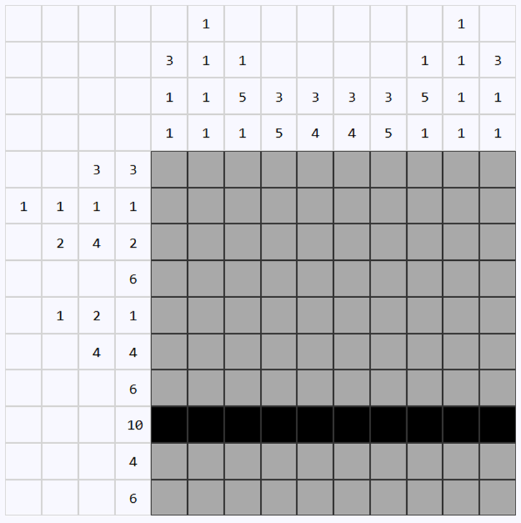
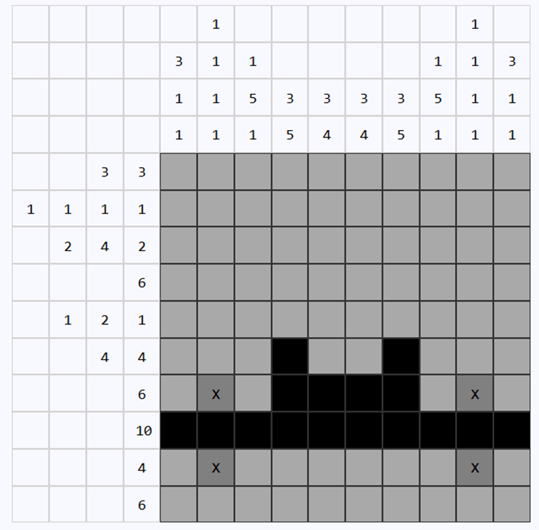
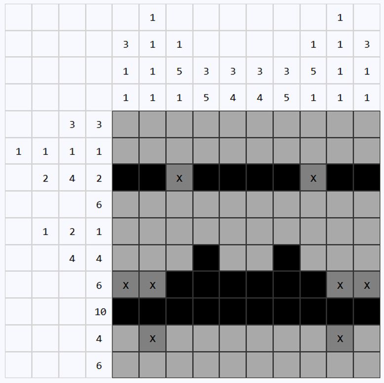
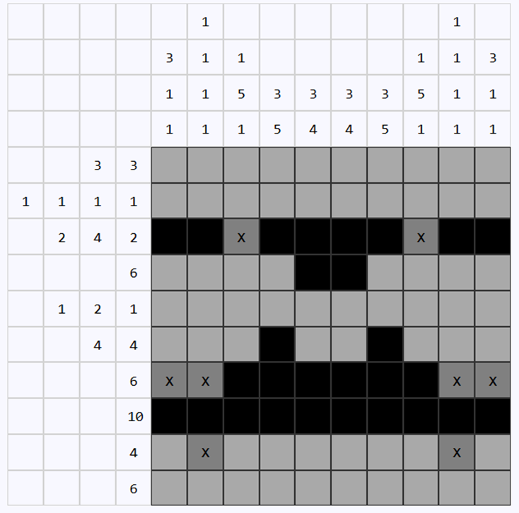

Nonograms are a puzzle on a grid where information in the form of “clues” are given on the tops of columns and to the left of rows. A number indicates that ...
Let's look at level 1 pictured above. Right away we see a row that must be filled in completely because on a 10x10 grid, any line with a clue of 10 must be filled completely.
Generally, once you place a row the next best thing is look at the column and see how this additional information impacts the columns. The same goes for when you place a column - next you should check the rows.
We can see that the following 6 cells must be filled to satisfy the column clues. In every possible situation these cells are filled. Since the clue in column 4 is (2, 5), going from top to bottom there must be 2 cells filled, followed by at least one blank cell, and then 5 more in a row. If the 5 goes to the bottom of the grid, these 2 cells must be colored. Because of the information we gathered from row 8, in any other situation these cells are also filled. …
We can also look at the second column and the eighth column to see that the clues are (1,1,1,1) so any cell that is filled must have blanks around it. We don’t have enough information to determine which 1 in the sequence this is, but since all the values are 1.
Since we just found out the values of cells from column clues, we should check the rows and see if we have any additional information now. As you can see, we can complete row 7 because of the squares we determined must be blank.
Now I want to introduce you to one more technique that is extremely helpful in solving nonograms called slack. If you add the values of the clues together plus 1 for every blank between them and then subtract the corresponding axis you get this slack value. If slack equals 0, you can solve the entire line. If slack equals a value smaller than that of the largest clue value, there is a possible move in that line. Let's take for example row 3:
Adding the clues gives 2+4+2 = 8
Adding the blank spaces gives 8 +1 +1 = 10
Subtracting this value from 10 gives 10-10 =0, so the line is completely solvable, or “forcible”.
Similarly, let's take row 4. The line clue is 6, so we don't add any spaces to this value.
10-6 =4 Since the largest value is 6 and are slack is 2, we know 2 cells must be filled.
By following this general guideline, all nonograms on this site can be solved.